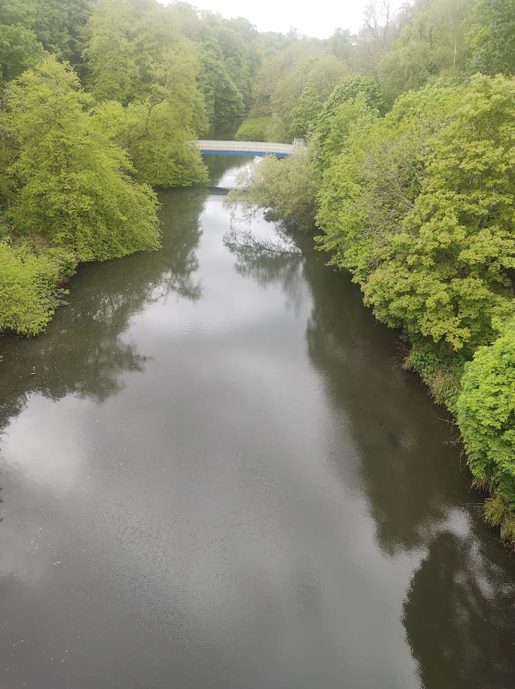
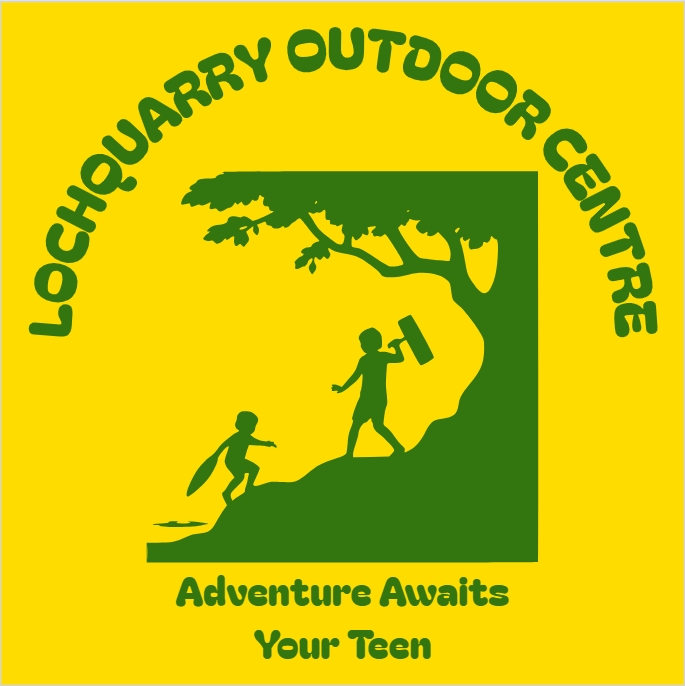

Contact our adventure experts


We'd love to hear from you. Whether you're booking a school visit, Scouts trip or youth group adventure, our team is here to help.
Lochquarry Outdoor Centre provides exciting outdoor experiences for young people aged 6-18 in the beautiful Argyll hills.
Booking Information
Phone: 01475 229 8311
Email: info@lochquarrycentre.co.uk
Address: Lochquarry Outdoor Centre, 1 Benmore, Dunoon, Scotland, PA23 8QU.
Opening Times: Monday - Friday, 9:00am - 5:00pm
Send us a Message
Customer Review
“The Scouts loved every second of it, especially the powerboating” - Martin Bainbridge, Scout Leader
Useful External Link
Visit the official Visit Scotland website to explore more outdoor adventures across Scotland.
Visit Scotland